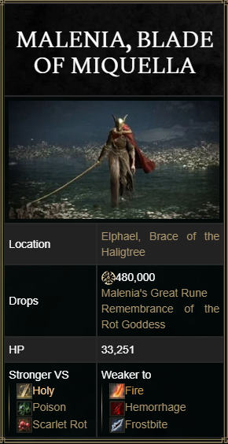

MALENIA, BLADE OF MIQUELLA

Malenia, Blade of Miquella and Malenia, Goddess of Rot is a two-phase Demigod Boss in Elden Ring. She is the Empyrean twin sister of Miquella and gained renown for her legendary battle against Starscourge Radahn during the Shattering, in which she unleashed the power of the Scarlet Rot and reduced Caelid to ruins.
This is an optional boss, as players do not need to defeat her in order to advance in Elden Ring.
" ...Heed my words. I am Malenia. Blade of Miquella. And I have never known defeat. "
 MALENIA, BLADE OF MIQUELLA COMBAT INFORMATION
MALENIA, BLADE OF MIQUELLA COMBAT INFORMATION
- • Health: 33,251 HP
- • Defense: 123
- • Stance: 80
- • Parryable: Yes
- • Is vulnerable to a critical hit after being stance broken or parried
- • Damage: Standard, Slash, Pierce, Holy
- • Inflicts: Scarlet Rot
- • Drops 480,000 Runes, Malenia's Great Rune, Remembrance of the Rot Goddess

MALENIA, BLADE OF MIQUELLA NOTES AND OTHER TRIVIA
- • "In the first year after launch, From Software reported that Malenia had killed players 329 million times" - How Many Times Players Attempted Malenia
- • In version 1.04 of Elden Ring, there was a bug related to the healing mechanic, which was present only when players fought Malenia in co-op - each attack would result in heal, even if the attack missed due to i-frames. This has since been fixed as of update 1.04.1
- • Melina's armor set can be found in the area directly before Malenia's boss room. This and the similarity of their names has led many fans to speculate that they are related in some way.
- • In the Elden Ring trailer shown at E3 2021, Malenia's arena is slightly different, with a much darker appearance and fewer roots in the background. However, the clip from her pre-battle cutscene has the final arena design.
- • The first phase can't be finished with a critical strike or damage caused by inflicting status effect - Malenia will remain with 1 HP left, even with poison or rot damage. In a very earlier version of the game, if the player managed to finish that phase with critical strike, 2nd phase Malenia would spawn with 1 HP.
- • After the player parries her three times and she enters the animation that allows for a critical hit, she can be staggered by any attack (including things like throwing knives), knocking her out of the critical animation.
- • Malenia is featured in the game's Collector's Edition, which includes a statue of her and a replica of her helmet.
- • Bug: If player depletes her poise while she performs attack with hyper-armor, she will not be put in a state that allows to perform a riposte.
- • Bug (possible only in co-op or with Spirit Ash): If player manage to end first phase with a riposte while Malenia's HP is 0, she will spawn with 1HP in 2nd phase.
- ∘ This can cause some odd situation in her attacks, as her first one will not be Scarlet Aeonia
- • Voice Actress: Pippa Bennett-Warner